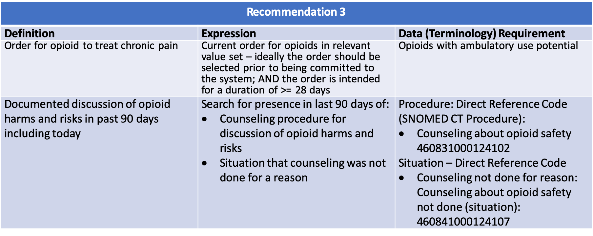
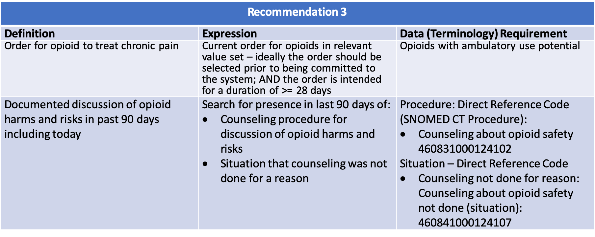

---
# jekyll header
---
{% include header.html %}
{% include container-start.html %}
8.8.0 Recommendation #3 - Opioid Therapy Risk/Benefit Discussion 
Recommendation #3:
Before starting and periodically during opioid therapy, clinicians should discuss with patients known risks and realistic benefits of opioid therapy and patient and clinician responsibilities for managing therapy (recommendation category: A, evidence type: 3).
8.8.1 Functional Description
{% include recommendation03-functional-description.html %}
 
{% include opioid-review-useful-definitions.html %}

{% include opioid-review-useful-definitions.html %}
8.8.2 Content
The following artifacts formalize the description of the logic and behavior defined by this recommendation.
| Patient is 18 years or older and has an outpatient Medication Request of Suboxone 2 MG / 0.5 MG Sublingual Film (RXNorm 1010603) authored “Today” and a “documented discussion of opioid harms and risks” procedure completed 91 days prior to today. Patients “Dosage Instructions” are 1 Film per day for 30 days. This will result in a summer message: “Recommend counseling regarding potential opioid harms and risks” |
Test Bundle example-rec-03-true-make-recommendations |
Request JSON example-rec-03-in-no-counseling-within-90-days |
Response JSON example-rec-03-in-no-counseling-within-90-days |
| Patient is 18 years or older and has an outpatient Medication Request of Suboxone 2 MG / 0.5 MG Sublingual Film (RXNorm 1010603) authored “Today” and a “documented discussion of opioid harms and risks” procedure completed 88 days prior to today. Patients “Dosage Instructions” are 1 Film per day for 30 days. This will not result in any recommendation messages. |
Test Bundle example-rec-03-false-due-to-discussion-within-90-days |
Request JSON example-rec-03-out-counseling-within-90-days |
Response JSON example-rec-03-out-counseling-within-90-days |
{% include container-end.html %}
{% include footer.html %}